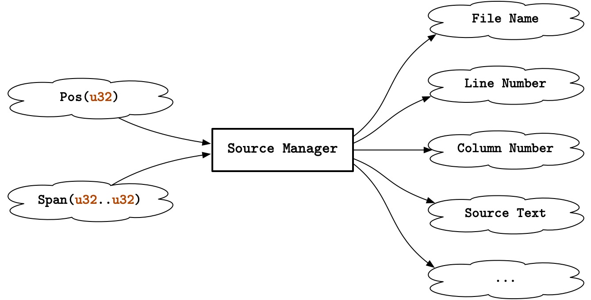

Kona 是我最近正在实现的语言, 在计划中它是一个 ML 家族的方言, 语法与 Standard ML 类似, 但会额外支持行多态 (row polymorphism) 和多态变体 (polymorphic variant). 不过截止到目前, 我连词法解析器都还没开始写, 所以这里就不花篇幅介绍了, 你只需要知道 “Konac” 是一个编译器/解释器就好. 这篇文章讲的是它的源码信息管理器和诊断引擎的实现.
考虑一下, 如果想要输出像 Rustc 这样的诊断, 我们都需要什么样的位置信息?
error[E0277]: cannot add `&str` to `{integer}`
--> src/main.rs:2:15
|
2 | let x = 1 + "one";
| ^ no implementation for `{integer} + &str`
|
= help: the trait `Add<&str>` is not implemented for `{integer}`
有几个显而易见的答案:
src/main.rs);2) 哪一列 (15);" let x = 1 + \“one\”;");在 Kona 的语法树中, 每个词元 (token) 乃至语法节点 (node), 都需要一对这样的位置信息来表示它们的起止位置. 如果直接存储全部的这些内容, 就会造成巨大的空间浪费. 我们需要一个缓存机制, 让我们能用更小巧的方式来定位源码, 在需要时也可以获得完整的信息, 这时候就需要源码管理器啦!
源码管理器会给每个位置分配一个全局唯一的整数 Pos(u32), 通过源码管理器, 我们能以较小的开销获得一个 Pos(u32) 对应的文件名、行号、列号等信息. 类似地, Span(u32..u32) 是由一对 Pos 组成的区间, 你可以通过源码管理器获取这个区间对应的源码.

在 Konac 中, 源码管理器所需的一切信息, 都被保存在一个叫做 SourceMap 的结构体中. 如果把 SourceMap 比作一个巨大的, 横跨多个文件的字符串, 那 Pos 就是这个字符串的索引.
source_map.query_info(pos)
=> PosInfo {
file_name: "src/main.rs",
line: 2,
column: 15,
..
}
source_map.query_line(pos)
=> 2
source_map.query_column(pos)
=> 15
source_map.query_source(start..end)
=> "let x = 1 + \"one\""SourceMap 可能会读入多个源文件, 由于我们希望 Pos 是全局唯一的, 所以每个源文件都需要被分配一段独立的, 互不相交的区间, 这个区间的长度应该恰好等于这个文件的长度. 假设我们有三个源文件, 长度分别为 100, 200, 300, 那么读取后, SourceMap 应该大致是这样的:
SourceMap {
source_files: [
SourceFile {
path: "src/main.kona",
span: 1...101,
},
SourceFile {
path: "src/test1.kona",
span: 101...301,
},
SourceFile {
path: "src/test1.kona",
span: 301...601,
},
],
}当我们拿到一个 Pos(121) 的时候, 我们很容易就可以知道, 这个源码在 src/test1.kona 文件中, 是第 21 个字符.
这个搜索过程可以用二分查找来优化, 只要能保证 source_files 按照 span 的起始位置来排序即可. Rust 的标准库提供了一个非常好用的函数 binary_search_by_key, 你可以使用 file.span.start 作为键 (key), 来搜索包含 pos 的 SourceFile.
pos 恰好和 source_files 中某个文件的 file.span.start 相等时, binary_search_by_key 会返回 Ok(index), 此时 pos 就是 index 索引的文件的第一个字符;pos 不和任何一个文件的 file.span.start 相等时, binary_search_by_key 会返回 Err(index), 此时 index 是 pos 应该插入的位置, 这个位置的前一个, 就应该是包含 pos 的文件;整个源码管理器实现, 都是建立在二分查找这个非常简单的算法上的.
按照这样的思路, 我们很容易就可以设计出查找一个 Pos 在第几行的设施. 在 SourceFile 中, 我们可以新增一个 line_starts 字段, 用来缓存每一行的起始位置, 这样我们就可以用二分查找来找到 pos 所在的行.
SourceFile {
path: "src/main.kona",
span: 1...101,
line_starts: [1, 10, 20, 30, 40, 50, 60, 70, 80, 90, 100],
}
source_file.query_line(Pos(34))
=> 4现在我们的 SourceMap 已经可以根据 Pos 找到指定的源文件和行数了. 实际上, 如果你的语言只计划支持 ASCII 字符, 这个 SourceMap 完全可以满足你的基本需求了. 但是, 如果 Unicode 字符也在你的计划在内, 痛苦就随之而来了.
现在, 我们回顾一下文章最开始的 Rust 诊断信息, 但是把 x 换成 λ.
|
2 | let λ = 1 + "one";
| ^ no implementation for `{integer} + &str`
|
思考一下, 这个红色的下划线 ^ 是如何实现的?
看起来, 我们只需要这个 Pos 所在的列数就可以实现这个效果了. 思路也没什么变化, 只需要先找到这个 Pos 所在的行, 找到这一行的起始位置, 然后用 Pos 减去这个起始位置, 就可以得到这个 Pos 在这一行的列数了.
source_file.query_column(pos)
=> 16但是, 非常不幸, 这个结果是错的.
UTF-8 (或 UTF-16) 是变长 (variable-width) 字符编码, 一个码点 (code point) 可能需要由多个连续的码元 (code unit) 来表示. 当你读取一个字符串的第 项时, 你读到的不一定是第 个字符, 这取决于它前边是否有多字节字符.
|
2 | let λ = 1 + "one";
| ^ no implementation for `{integer} + &str`
|
在这个例子中, + 的位置是 Pos(28), 这一行的起始位置是 Pos(13), 如果简单地做差, 可以计算出 + 在这一行的列数是 16 (由于列数是从 1 开始的, 这个值应该是 28 - 13 + 1 = 16). 但实际上, + 在第 15 列. λ (U+03BB) 在 UTF-8 编码中需要两个码元 [206, 187] 来表示, 在计算中, 它占了两个位置.
为了避免多字节字符造成的影响, 我们需要在 SourceFile 中再增加一个新字段 multi_byte_chars, 用来缓存这个文件中所有多字节字符的起始位置和它们占用的字节数量. 为此还需要声明一个新类型:
struct MultiByteChar {
pos: Pos,
// The number of bytes in the UTF-8 encoding of the character. It could
// only be 2, 3 or 4.
len: u8,
}在 multi_byte_chars 中, MultiByteChar 是根据 pos 排序的, 在已知某行起始位置的情况下, 只需要遍历这一行中, pos 小于指定位置的 MultiByteChar, 然后将它们的 len 加起来, 就可以得到计算列数中的误差值了. 减掉它, 我们终于可以得到正确的列数了.
source_file.query_column(pos)
=> 15截止到这里, 我们已经能够获取正确的列数了, 但这个列数只能用于文本编辑器中的错误提示, 而不能用在终端中. 我们修改一下我们的例子:
|
2 | let 🌊 = 1 + "one";
| ^ no implementation for `{integer} + &str`
|
加号 + 在第 15 列, 这是毫无疑问的, 但这个红色的下划线 ^ 其实在第 16 列, 因为 🌊 在显示上占了两个字符的位置. 除了常见的东亚字符和 emoji, Unicode 字符集中很多字符的显示宽度都是 2, 甚至有些字符的显示宽度是 0, 而 Tab 则需要 4 个位置. 为了解决这个问题, 位置信息不仅需要包含一个普通的列数 (column), 还需要包含一个显示列数 (display_column).
这一次, SourceFile 又需要增加新字段 non_narrow_chars, 用于保存那些显示宽度不为 1 的字符:
struct NonNarrowChar {
pos: Pos,
kind: NonNarrowCharKind,
}
enum NonNarrowCharKind {
ZeroWidth, // A zero-width character.
Wide, // A full-width character.
Tab, // A tab, treated as four spaces.
}字符的显示宽度可以通过 Unicode Standard Annex #11 East Asian Width 来获取, 在 Rust 里, 你可以使用 unicode-width 这个包.
在 Konac 中, SourceMap 中以字符串的形式存储在了整个编译单元中所有的源码, 这并不是什么好事, 但其实也无伤大雅啦. 如果你使用的是 C 或 C++ 这样的语言, 给 SourceMap 增加内存映射 (memory mapping) 支持也不是什么难事.
在这种条件下, 我们可以开始着手解决最后的一点小问题了. 熟悉 Git 的人应该知道, Git 会为文件自动匹配适应大年操作系统的换行符. 在 Linux 下, 以 LF (即 \n) 换行的文件在同步到 Windows 上后, 如果未经特殊设置, 会自动转为以 CRLF (即 \r\n) 换行的文件, 这两种换行的字符数量并不相同. 于是就引出了一个问题, 同一份源码, 在不同操作系统下解析出来的语法树, 其位置信息会略有差别. 如果我们想要抹平这种差异, 就需要给 SourceFile 再添一个新字段 normalized_pos 了, 它是 Vec<NormalizedPos> 类型的:
struct NormalizedPos {
pos: Pos
diff: u32
}之前的操作中, 我们都只是在解析并缓存源码的相关信息, 没有对源码本身做改动. 而这一次, 我们会对源码进行一些修改, 这也是为什么我在上文要强调 SourceMap 拥有以字符串形式存储的所有源码.
0xEF 0xBB 0xBF) 会被删除, 每次删除会导致差异 diff 增加 3;\r\n 会被转换为 \n, 每次转换会导致差异 diff 增加 1;当 normalized_pos 尾部添加新 NormalizedPos 时, 它的 diff 值会根据当前 normalized_pos 末尾的 diff 值进行迭加. 如果我们需要获取某个 Pos 在源文件中最原始的位置, 只需要找到这个位置的上一个偏移点, 并使用这个 diff 值加以修正就好了.
终于, 我们可以用 SourceMap 正确, 高效地查询位置信息了!
source_map.query_info(pos)
=> PosInfo {
file_name: "src/main.rs",
line: 2,
column: 15,
display_column: 16,
}